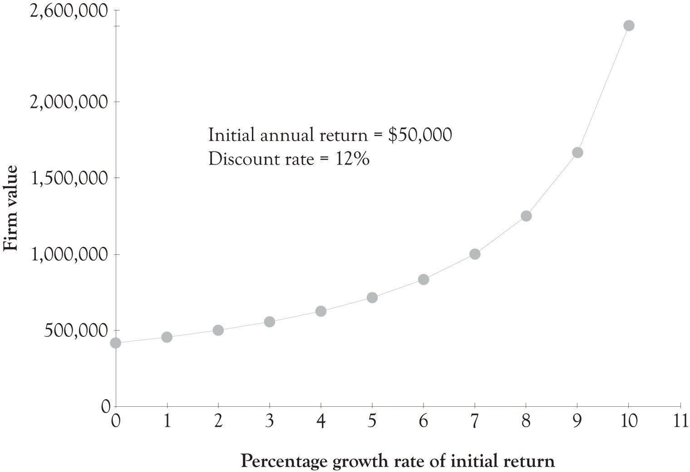

Everyone is interested in how much a business is worth. The entrepreneur and the entrepreneur’s family are interested because they hope to use some of the income from the business to live on or because they are interested in how much they might sell the business for someday. Then, there is a simple curiosity factor: “I wonder what I could get for this?” If the entrepreneur seeks outside funding from friends, banks, angels, and venture capitalists (VCs), they will be very interested in the potential value of the firm. When a public company is being sold, its current trading price establishes a starting point—usually a minimum transaction price—but the acquiring company must still decide on the maximum bid consistent with a profitable acquisition. But when selling a nonpublic company, even that starting point does not exist. The field of business valuation has developed techniques designed to estimate the value of a business.This chapter is adapted from material originally appearing in Huefner, Largay, and Hamlen (2005 and 2007, Thomson Custom Publishing; used by permission of the copyright holders).
One author gives this thorough definition of business valuation:
A business valuation determines the estimated market value of a business entity. A thorough, robust valuation consists of an in-depth analysis by a qualified independent professional who combines (a) proven techniques; (b) analysis and understanding of a specific company and its associated industry; (c) research and analysis of industry, association, and other publications; academic studies; the national and local economy; and online databases with (d) judgment honed by education, training, and experience; and (e) intuition. A valuation estimates the complex economic benefits that arise from combining a group of physical assets with the intangible assets of the business enterprise as a going concern. The resulting valuation, part science and part art, is a well-founded estimate that represents the price that hypothetical informed buyers and sellers would negotiate at arms length for an entire business or for a partial equity interest.Jones and Van Dyke (1998).
A major reason why businesses are bought is that parties interested in beginning or expanding business activity often prefer acquiring an existing business rather than starting a new one. Existing businesses are “up and running,” and have in place a product or service line, a work force, customers, suppliers, the necessary physical resources, and various intangibles—technology and “know-how,” systems and procedures, location, reputation, and the like.
From a seller’s perspective, business owners need to have an exit strategyA means of extracting value from business owners’ investments of time and resources in the business., a means of extracting value from their investments of time and resources in the business. A sale may be occasioned by the death or intended retirement of the owner, or by a desire to “cash out” the investment at a time when its value is perceived to be high. Or, an owner may wish to expand the business by taking on new partners, selling a portion of ownership to new parties. Sometimes this is done to reward and retain key personnel by offering them an ownership interest in the business.
Even when no transfer of ownership is involved, a business valuationDetermines the estimated market value of a business entity. may be done when seeking major new financing. A valuation provides the prospective lender with an indication of the safety of a loan secured by the business.
The foundations of business valuation techniques and practice lie in the tax law, as it has long been necessary to value businesses for estate and gift taxation. Though over 50 years old,The first two digits in a Revenue Ruling number signify the year of issue. Thus, Revenue Ruling 59–60 was issued in 1959. Revenue Ruling 59–60 is still recognized by professionals and by the courts as an important source of standards for valuation. Section 1 of the Ruling states its purpose:
The purpose of this Revenue Ruling is to outline and review in general the approach, methods, and factors to be considered in valuing shares of the capital stock of closely held corporations for estate tax and gift tax purposes. The methods discussed herein will apply likewise to the valuation of corporate stocks on which market quotations are either unavailable or are of such scarcity that they do not reflect the fair market value.
Subsequent rulings enhance and expand these basic standards:
The basis for business valuation is the familiar concept of fair market value, which is defined in Section 2.02 of RevRul 59-60 as follows:
Fair market value [is] the price at which the property would change hands between a willing buyer and a willing seller when the former is not under any compulsion to buy and the latter is not under any compulsion to sell, both parties having reasonable knowledge of relevant facts. Court decisions frequently state in addition that the hypothetical buyer and seller are assumed to be able, as well as willing, to trade and to be well informed about the property and concerning the market for such property.
This definition remains the common definition of fair market valueThe price negotiated by well-informed, willing, and able buyers and sellers who are not compelled to act.: the price negotiated by well-informed, willing, and able buyers and sellers who are not compelled to act.
One consideration in determining the value of a business ownership interest is the extent to which that interest can exercise control over business activity. ControlThe power to direct the policies and management of the business. refers to the power to direct the policies and management of the business. Control is most commonly measured by voting power—holding more than 50% of the voting equity of the company. In some cases, when there is no majority stockholder, other circumstances can lead to one owner having effective control.
When there is a controlling interest, other ownership interests are said to be minorityInterests that represent less than 50 percent of the voting power in the company. or noncontrolling interestsInterests that represent less than 50 percent of the voting power in the company.. Such interests represent 50% of the voting power in the company. A voting interest of exactly 50% is neither a controlling nor a minority interest. While a 50% interest cannot cause things to happen, it can prevent things from happening. Having two 50% owners is often considered an inefficient business structure, as a stalemate occurs if the two owners do not agree. However, that structure—shared control—appears in many joint ventures.
A controlling interest is generally considered to be worth more, on a per-share basis, than a noncontrolling interest. Among the powers of a controlling interest are the abilities to:Pratt (2001).
A controlling owner has different options for disposing of the investment (exit) or converting it to cash (liquidity) than does a noncontrolling owner. The controlling owner’s exit or liquidity options include selling the controlling interest, taking the company public, or deciding to liquidate the business. The noncontrolling owner’s exit or liquidity options include selling to the controlling owner or selling to another noncontrolling owner. When a buyer does not exist, the noncontrolling owner effectively has no exit option. Continuing to hold the investment is a liquidity option to the extent that the business pays dividends.
A variety of techniques are available for conducting a business valuation. Part of the skill and expertise of a valuation analyst is the ability to select the appropriate technique for the situation at hand. Even when one technique is chosen, valuation under other techniques is often determined for comparative and confirmative purposes. Some analysts present a weighted average of the outcome of several techniques as their final conclusion, while others select a final value from the range of outcomes without resorting to formal weighting.
Whatever the technique, the analyst should consider a variety of factors about the business and its industry. Among the factors to be considered are the following:This listing is drawn from American Institute of Certified Public Accountants (2003).
The consideration of risk factors is an especially important part of business valuation. Uncertainties or concerns in any of the above areas may signify risks to be considered.
Two simple approaches to business valuation are (a) determining the value of the company’s net assets (assets minus liabilities) and (b) identifying the fair market value of a similar business. We discuss them briefly in the following sections, although they often prove unsatisfactory.
One approach to business valuation involves direct estimation of the value of the net assets to be acquired (=assets to be acquired by the buyer minus any liabilities to be assumed by the buyer). An asset-based approachAn approach to business valuation that involves direct estimation of the value of the net assets to be acquired. typically begins by examining the firm’s balance sheet. However, there are several reasons why book (recorded) values are typically unsatisfactory indicators of business value:
Given these deficiencies, the analyst attempts to adjust book values to arrive at an overall business valuation. The analyst examines and values each asset and liability to estimate its fair market value, using techniques such as the determination of market values for comparable assets, expert appraisals, and price index-based inflation adjustments. It is important to identify and value unrecorded intangible assets, including goodwill, and unrecorded liabilities, such as environmental liabilities, operating leases, and other off-balance-sheet and contingent obligations.
The logic of a direct comparison approachCompares the average of other businesses to quickly value one. Based on the idea that similar assets should sell for similar prices. lies in the idea that similar assets should sell for similar prices, a principle well established in other markets.See Cornell (1993). In real estate, for example, the market value of a house could be estimated by finding recent selling prices for substantially similar houses in comparable neighborhoods. Finding sales of comparable businesses, however, is difficult. Transactions are few, and comprehensive data sources do not exist. Thus, a true direct comparison approach cannot generally be used in business valuation.
However, a form of direct comparison exists when some measure or ratio serves as the link between the business valuation in question and other businesses. For example, professional practices like Certified Public Accountant (CPA) firms often sell for a multiple of billings, perhaps two to three times annual billings. For example, the average price–earnings (P/E) ratio of similar public firms in the industry might be used. If such firms sell for 12 times earnings, we can apply that same measure to a business being valued. The capitalized earnings approach discussed later is a version of this technique. As with the discounted future returns approach discussed later, one needs to select a particular cash flow or income measure, such as gross revenues. One also needs to select the “other variable”—number of years’ billings, P/E ratio, and the like—that will link the business being valued to other businesses.
Direct comparison techniques serve as a quick way of estimating business value, with little need for extensive estimation. However, because the comparison typically reflects an average of other businesses, this technique does not do a good job of incorporating distinctive features of the business being valued.
The paybackThe number of periods management must wait before the accumulated positive cash flows from an investment exceed the initial cost of the investment project plus any negative operating cash flows. for an investment is the number of periods management must wait before the accumulated positive cash flows from the investment exceed the initial cost of the investment project plus any negative operating cash flows. Investments are considered acceptable when the payback period is less than some predetermined time period, for example 3 years. Here is the computation:
| Beginning investment: | $100,000 |
| Cash flow year 1: | −$15,000 (with the beginning investment, $115,000 still left to recover) |
| Cash flow year 2: | $50,000 ($65,000 still left to recover) |
| Cash flow year 3: | $60,000 ($5,000 only left to recover) |
| Cash flow year 4: | $60,000 |
| Cash flow year 5: | $60,000 |
In this example, the payback occurs at about 3 years and 1 month. Many people do not consider payback to be a discounted cash flow technique because it does not take into account the time value of money. This is not entirely true. A short payback period, say, for example, 2 years, reflects the importance of dollars received in the short term and thus the time value of money.The payback approach is related to the hyperbolic discounting phenomena. There appears to be psychological as well as economic reasons behind the fact that people prefers a reward today rather than wait for a substantial reward. Studies have found that people sometimes use average annual discount rates of over 300% over the course of 1 month and over 100% over a 1-year horizon. They ask people whether they prefer $100 today rather than $200 next month. See Noor (2009). The payback approach does not take into account cash flows that are outside of the payback threshold and they do not take into account the magnitude of the cash flows. Amazon is now a viable business but early investors did not consider the payback to be an important tool for deciding whether to invest in Amazon. This is a normal situation for many start-ups where positive cash flows do not occur until many years in the future. Discounted cash flow approaches incorporate the importance of distant cash flows and the magnitude of the cash flows.
Perhaps the most common, and conceptually best, technique for business valuation is calculation of the present value of expected future returns from the business. Although present-value computations are easy, determining the relevant inputs is not. Choices need to be made for:
We consider each of these areas.
Numerous measures of future return are available to the business valuation analyst. Although cash flow measures are the most common, the analyst must still decide on a particular cash flow measure to use. One possibility is cash flow from operationsReflects the cash impact of all operating activities during a time period., which reflects the cash impact of all operating activities during a time period. Others use free cash flow, a term for which different definitions exist.
The most common definition of free cash flowCash flow from operations minus cash investments in new assets needed to maintain operations. is cash flow from operations minus cash investments in new assets needed to maintain operations. A less common definition is cash from operations minus cash investments in new assets needed to maintain operations minus debt repayments (this measure is designed to approximate cash available to the new owners).
Other analysts use income rather than cash flow measures. There are many variations here as well: net income as conventionally measured by accounting; earnings before taxes (EBT); earnings before interest and taxes (EBIT); earnings before interest, taxes, depreciation, and amortization (EBITDA); and the like. In some cases, especially if a minority investment is being evaluated, expected dividends is the relevant measure of future return.
Estimating future returns is a difficult task. Often the starting point is past returns, perhaps adjusted for unusual and nonrecurring items that have occurred. Knowledge of the business, industry, economic conditions, and other factors must be brought to bear.
One important task is to separate the expected future returns from the business in its present form from the expected future returns under the guidance of the new owner. Often, the efforts of the new owner will be more influential in determining future success than continuing the same uses of assets already in place. Because the business valuation is usually being conducted to establish a selling price, the buyer should not pay the seller for the buyer’s anticipated improvements in the business.
Another consideration is whether to conduct the analysis on a constant dollar basis or to estimate revenue and cost increases resulting from inflation. Whichever is chosen, the discount rate should be selected in a consistent manner, as discussed in the next section.
Although discounting expected future returns is a conceptually sound approach to business valuation, it is often not used due to the practical difficulties of implementing it. We need projected returns for several years into the future, and such estimates can be highly speculative.
Many considerations enter into the selection of a discount rate. First let us consider the focus of the analysis. If the analyst employs return to all invested capital, then a discount rate appropriate to the entire capital structure should be chosen. This rate is usually called a weighted average cost of capital, because it includes costs for both debt and equity capital. In contrast, a return to equity capital focus calls for an equity-based discount rate. Following the well-known capital asset pricing model of finance, this rate includes at least two components: a risk-free rate and a risk premium, reflecting both the risks of general economic conditions and the risks of the specific business and industry. The beta β coefficient is the typical measure of risk premium used.
Next we consider adjusting for growth or inflation. When the estimates of future returns reflect inflation, then a discount rate that includes an inflation component applies. If future returns are estimated on a current (constant) dollar basis, then the inflation component should be subtracted from the discount rate. For example, suppose that an appropriate discount rate, including inflation, is determined to be 25%. The analyst uses this rate to discount estimated future returns that include inflation-based growth in revenues and costs (nominal dollars). On the other hand, if estimated future returns are based on current (constant) dollars, and the inflation assumption is 4% annually, then a discount rate of 21% (=25% minus 4% inflation adjustment) should be used to discount the current-dollar future returns. To express this another way, if the future dollar amounts in the valuation analysis reflect future prices and costs, the discount rate should include the inflation component. If the future dollar amounts are based on current prices and costs, reflecting no growth or inflation, the discount rate should exclude the inflation component.
These two discounting approaches do not provide exactly the same answer, but they are close enough. Given the many assumptions that go into a valuation calculation, the slight difference is usually deemed acceptable. For example, assume that the annual cash flow is currently $300,000. An 8-year time horizon is used for the analysis. It is estimated that cash flows will grow by 5% annually. A discount rate of 15%, including growth, is deemed appropriate. The present value of $300,000 annually discounted at 10% (15% minus the 5% growth assumption) and the present value of the growth-adjusted cash flows discounted at 15% are shown in Table 11.1 "Comparison of Present Values With and Without Growth".
Table 11.1 Comparison of Present Values With and Without Growth
| Year | Projected annual cash flow without growth ($) | Present value of cash flow without growth at 10% discount rate ($) | Projected annual cash flow with 5% growth ($) | Present value of cash flow with 5% growth at 15% discount rate ($) |
|---|---|---|---|---|
| 1 | 300,000 | 272,727 | 315,000 | 273,913 |
| 2 | 300,000 | 247,934 | 330,750 | 250,095 |
| 3 | 300,000 | 225,394 | 347,288 | 228,347 |
| 4 | 300,000 | 204,904 | 364,652 | 208,491 |
| 5 | 300,000 | 186,276 | 382,884 | 190,361 |
| 6 | 300,000 | 169,342 | 402,029 | 173,808 |
| 7 | 300,000 | 153,947 | 422,130 | 158,694 |
| 8 | 300,000 | 139,952 | 443,237 | 144,895 |
| Total | $1,600,476 | $1,628,604 |
When multiyear analysis is used, a growth or inflation factor should be considered in some way. If growth is completely ignored in the above example, the present value of a $300,000 annual cash flow discounted at 15% would be approximately $1,350,000. If growth is expected, ignoring it clearly understates the value of the business. Of course, if future declines in cash flows are expected, indicating a business with initial appeal but little staying power, ignoring the expected negative growth would overstate the business value.
As seen in the above example, a positive growth assumption can either be built into the cash flow estimates, or incorporated by a reduction of the discount rate. Either approach will increase the business value relative to making no adjustment for growth.
The two present values in Table 11.1 "Comparison of Present Values With and Without Growth" are approximately the same, differing by 2%, which may be more precise than the cash flow estimates themselves or the discount rate selection. Nonetheless, one could easily find the precise discount rate and use that. If one accepts 10% as the correct rate without growth, then the correct rate with 5% growth that would discount the cash flows with growth (fourth column above) to the $1,600,476 present value turns out to be 15.50%. Similarly, if one accepts 15% as the correct rate with growth, then the correct rate without growth that would discount the constant cash flows (second column above) to the $1,628,604 present value turns out to be 9.52%. But for most purposes, the process illustrated above is sufficient.
Most of the literature on the weighted average cost of capital is based on information from public capital markets. Recently, work has been done to try to establish a private cost of capital approach.See Slee and Paglia (2010). They identify five different capital markets for private firms: bank lending, asset-based lending, mezzanine financing, private equity, and venture capital. Median rates of returns for these markets (first quarter 2010) were found to range from 6.8% for bank lending to 38.2% for venture capital financing.
The analyst who uses a discounted future returns approach must determine how far into the future to project. The general answer is as far as possible, keeping in mind that the uncertainty of the estimates increases as they get further away. Because a business is usually assumed to be a going concern, returns are presumed to continue indefinitely. Thus one could assume that returns continue forever. Alternatively, the analyst could limit the analysis to a fixed time period, say 10 years. In this case, one makes specific annual projections for 10 years and estimates a terminal value of the business at the end of that period.
Although estimates of future returns, or of terminal value, become more speculative the further in the future they are, the effect of discounting mitigates the increased uncertainty. For example, at a discount rate of 20%, $1,000 in year 10 contributes only $161 to the present value, and $1,000 in year 20 contributes only $26 to the present value.
When we assume that future returns will continue forever in equal amounts, we have a perpetuityWhen we assume that future returns will continue forever in equal amounts.. The present value is given by:
Present value of ordinary perpetuity = Constant annual return/Discount rateFor a discount rate of 20%, the present value is five times the annual return ($5 = $1/0.2). As shown in Table 11.2 "Impact of Time on Present Value ", about 60% of the present value occurs in the first 5 years, and about 84% in the first 10 years. Returns in later years have relatively little impact on the present value.
Despite the conceptual soundness of the discounted future returns method, the subjectivity of future return estimates is a major deterrent to its use. Parties to the negotiations will likely disagree over the assumptions employed in arriving at the estimates. As a result, business valuation often employs a conceptually similar approach that appears to avoid future estimation. This approach is known as capitalized earnings.
We saw that the discounted future returns method computes a present value based on applying a discount rate to the estimated returns of a number of future time periods. The capitalized earnings approachPresent value = Amount of return to be capitalized/capitalization rate., on the other hand, computes a present value based on applying a capitalization rate to a single amount of present or past returns, as follows:
Table 11.2 Impact of Time on Present Value
| Period | Present Value of $1 at 20% | Cumulative Present Value | Percent of perpetuity value |
|---|---|---|---|
| 1 | 0.833 | 0.8333 | 0.1667 |
| 2 | 0.6944 | 1.5278 | 0.3056 |
| 3 | 0.5787 | 2.1065 | 0.4213 |
| 4 | 0.4823 | 2.5887 | 0.5177 |
| 5 | 0.4019 | 2.9906 | 0.5981 |
| 6 | 0.3349 | 3.3255 | 0.6651 |
| 7 | 0.2791 | 3.6046 | 0.7209 |
| 8 | 0.2326 | 3.8372 | 0.7674 |
| 9 | 0.1938 | 4.0310 | 0.8062 |
| 10 | 0.1615 | 4.1925 | 0.8385 |
| 11 | 0.1346 | 4.3271 | 0.8654 |
| 12 | 0.1122 | 4.4392 | 0.8878 |
| 13 | 0.0935 | 4.5327 | 0.9065 |
| 14 | 0.0779 | 4.6106 | 0.9221 |
| 15 | 0.0649 | 4.6755 | 0.9351 |
| 16 | 0.0541 | 4.7296 | 0.9459 |
| 17 | 0.0451 | 4.7746 | 0.9549 |
| 18 | 0.0376 | 4.8122 | 0.9624 |
| 19 | 0.0313 | 4.8435 | 0.9687 |
| 20 | 0.0261 | 4.8696 | 0.9739 |
| Note: Annual payments assumed to occur at the end of year. | |||
This formula is equivalent to the present value of a perpetuity discussed above.
What amount of return should be capitalized? First, as discussed previously, any measure of return can be used—a cash flow measure, an income measure, or even revenues or dividends. Second, the return measure may be based on past, present, or even future data. Examples include the following:
Most commonly, the use of present returns, or an average of past returns, appears to avoid the estimation problem. But one cannot really avoid estimation. To base a present value on current or past returns implicitly assumes the continuation of such returns in the future.
The capitalization rateThe relevant discount rate minus the assumed rate of growth (or decline) in future returns. is the relevant discount rate, discussed above, minus the assumed rate of growth (or decline) in future returns. As an example, suppose last year’s net income of $200,000 is the amount to be capitalized, that we decide on a relevant discount rate of 20%, and that we expect 3% earnings growth. The capitalized value of the company is:
| Present value | = Amount of return to be capitalized/capitalization rate |
| = $200,000/(0.20 − 0.03) | |
| = $200,000/0.17 | |
| = $1,176,471 |
On the other hand, if we anticipate a 3% earnings decline, the capitalized value is:
| Present value | = Amount of return to be capitalized/capitalization rate |
| = $200,000/(0.20 + 0.03) | |
| = $200,000/0.23 | |
| = $869,565 |
A capitalization rate for equity returns is the inverse of the familiar P/E ratio commonly cited for publicly traded companies, and thus is sometimes called an earnings–price (E/P) ratio. For example, a company selling at 17 times earnings has an effective capitalization rate of 5.88% (0.0588 = 1/17). In selecting a capitalization rate for a specific business, one could use E/P ratios of reasonably similar public companies as guides. However, when valuing small nonpublic companies, lower P/E ratios (higher E/P ratios and capitalization rates) are typically appropriate, to allow for increased risk. It is not uncommon for small nonpublic companies to sell for 3–10 times earnings.
A widely used variation of the capitalized earnings method is called the capitalization of excess earningsHybrid variation of capitalized earnings method that reflects the concept that earnings derive from both the tangible assets and intangible assets of the business.. This hybrid method reflects the concept that earnings are derived from both the tangible assets and intangible assets of the business. Earnings from tangible assets are assumed to be relatively constant from one firm in an industry to another, whereas earnings from intangible assets may vary widely. The method proceeds as follows:
The value placed on the business has two components:
Business value = Net tangible assets + Capitalized value of excess earningsBecause we tend to consider earnings attributable to intangibles to be more risky than earnings attributable to tangible assets, we tend to use high capitalization rates (low multiples).
Table 11.3 Capitalization of Excess Earnings ($)
| Value of net tangible assets | 350,000 | |
| Reported earnings of the company | 50,000 | |
| Earnings attributed to tangible assets = $350,000 × 0.10 | 35,000 | |
| Excess earnings | 15,000 | |
| Capitalized value of excess earnings = $15,000/0.25 | 60,000 | |
| Estimated value of company | 410,000 |
When we calculate negative excess earnings, the business is still presumed to be worth the value of its net tangible assets and we make no reduction for apparent negative intangibles.
For example, suppose a company reports earnings of $50,000 and net tangible assets of $350,000. Average industry earnings are 10% of net tangible assets, and we decide to capitalize excess earnings at 25%. The value estimate for the business is $410,000, as shown in Table 11.3 "Capitalization of Excess Earnings ($)".
The excess earnings method, like much of business valuation, has its foundation in materials promulgated by the Internal Revenue Service. Revenue Ruling 68–609 sets forth a so-called formula method, as follows:
The question presented is whether the “formula” approach, the capitalization of earnings in excess of a fair rate of return on net tangible assets, may be used to determine the fair market value of the intangible assets of a business. The “formula” approach may be stated as follows:
A percentage return on the average annual value of the tangible assets used in a business is determined, using a period of years (preferably not less than five) immediately prior to the valuation date. The amount of the percentage return on tangible assets, thus determined, is deducted from the average earnings of the business for such period and the remainder, if any, is considered to be the amount of the average annual earnings from the intangible assets of the business for the period. This amount (considered as the average annual earnings from intangibles), capitalized at a percentage of, say 15 to 20 percent, is the value of the intangible assets determined under the “formula” approach.
The percentage of return on the average annual value of the tangible assets used should be the percentage prevailing in the industry involved at the date of valuation, or (when the industry percentage is not available) a percentage of 8 to 10 percent may be used.
The 8 percent rate of return and the 15 percent rate of capitalization are applied to tangibles and intangibles, respectively, of businesses with a small risk factor and stable and regular earnings; the 10 percent rate of return and 20 percent rate of capitalization are applied to businesses in which the hazards of business are relatively high.
The above rates are used as examples and are not appropriate in all cases.…
The past earnings to which the formula is applied should fairly reflect the probable future earnings. Ordinarily, the period should not be less than five years, and abnormal years, whether above or below the average, should be eliminated. If the business is a sole proprietorship or partnership, there should be deducted from the earnings of the business a reasonable amount for services performed by the owner or partners engaged in the business.…
The “formula” approach should not be used if there is better evidence available from which the value of intangibles can be determined.…
Because of the extensive guidance given in Revenue Ruling 68–609, many business valuation analysts follow it closely, even though it contains many cautions and qualifications, especially in performing valuations for tax purposes. This approach has come to be known as the Treasury MethodFollowing the extensive guidance given in Revenue Ruling 68–609..See Pratt et al. (1993) for an expanded discussion of the excess earnings method.
After initially estimating the value of a business, that estimate may be adjusted upward (premium) or downward (discount) to reflect other factors related to the ownership interest in question. For example, a controlling interest in a business is worth more on a per-share basis than a minority interest, as the holder of a controlling interest has authority over business decisions, whereas the minority interest holder does not. This section briefly examines some common premiums and discounts.For an extended discussion of premiums and discounts, see Pratt (2001).
Business valuations typically begin with a base value, using techniques applicable to a broad range of businesses. A premium or discount is an upward or downward adjustment to this base value, to reflect some different characteristics of the particular business being considered. These characteristics are reflected in various ways. If one uses a discounted cash flow approach to valuation, a higher or lower discount rate could reflect the special characteristics. Alternatively, the analyst could adjust the initial valuation estimate upward or downward for specific features of the business. Knowing how to identify and quantify premiums and discounts is one of the specific skills of a business valuation expert. The following situations can increase or decrease the discount premium:
Discounts may be applied to base business valuations for factors other than those described earlier. One possibility is a discount for contingent liabilitiesReflecting potential future claims resulting from past business activities that will become the responsibility of a buyer., reflecting potential future claims resulting from past business activities that will become the responsibility of a buyer. Such contingent liabilities involve potential litigation such as product liability, potential environmental claims, or potential tax adjustments for prior years. Because these liabilities are situation-specific, the valuation analyst must look sharply for them!
The above discussion indicates that discounts are more frequent than premiums. After achieving a base valuation, the analyst considers adjustments for the various factors discussed above. Note that the impact of these factors can be incorporated into the base analysis—for example, by adjusting the estimates of future income or cash flows—or can be reflected as an adjustment to the base value calculation. However incorporated into the business valuation analysis, discounts can have a large effect on the ultimate value.
Businesses that are yet to be undertaken, or are in the early stages of their development, are especially hard to value. Suppose an entrepreneur with a concept for a new business needs capital to launch the business. Because of the high risk of new businesses, traditional capital sources—banks and other institutional lenders, and the public equity markets—are usually not available. Most new businesses begin with capital raised from the founder’s own resources, and perhaps from friends and family. Sometimes, an unrelated investor who believes in the concept, referred to as an “angel,” also provides some seed capital. Angels are especially common in artistic ventures, such as movies or stage shows. As the business begins to develop, VCs often provide the next influx of capital. These investors take short-term ownership stakes in promising new businesses. Business valuations have a role to play in these situations as well as in the financing or purchase of established businesses.For an expanded discussion of valuation of startup companies, see Abrams (2001), especially Chapter 12 "Developing a Business Plan", and Evans and Bishop (2001), especially Chapter 15 "Wrap-Up".
Because a new business has little to no history, and because it may be pursuing innovative products, services, or other business features, uncertainty about its future prospects is especially high. A capitalized earnings approach cannot be used, as new companies frequently report losses in the early years, and their present earnings (losses) may not be indicative of expected earnings. A discounted earnings or discounted cash flow approach is typically most appropriate. Many analysts favor using cash flows rather than earnings, because of the importance of cash management in start-up firms. Many start-ups fail because they quickly run out of cash. During the “dot.com” era, analysts often focused on the rate at which a start-up consumed cash, a phenomenon colorfully known as its burn rateThe rate at which a start-up consumed cash..
When performing a discounted cash flow approach to valuing a new business, the analyst must decide on the estimate of cash flows to use. The entrepreneur’s forecasts are likely to be highly optimistic, reflecting his or her vision of a successful future. When using an entrepreneur’s forecasts, the analyst typically tries to neutralize the entrepreneur’s optimism with a high discount rate. A high rate reflects both the degree of risk involved and the expectations of capital providers for high returns to compensate for the risk. VCs might seek rates of return of 50% or more during the seed capital stage and 30–50% at later stages.
VCs are not long-term investors. They seek to cash out after 3–5 years. Their investments often take the form of specialized equity, such as a preferred stock issue with a high dividend rate and mandatory redemption at a specified future time, either at a high cash price or at a generous conversion into common shares. The latter option is appealing when the VCs anticipate an initial public offering of the start-up’s shares.
Venture capital investing is high risk. First-time start-ups have a 21% chance of succeeding. Even previously successful venture-capital-backed enterprises still only have a 30% chance of succeeding in the next venture.Gompers, Kovner, Lerner, and Scharfstein (2010).
In addition to using high discount rates for start-up companies, valuation analysts may use a multiscenario approach. One multiscenario approach begins by constructing alternative outcomes under different degrees of optimism about the future of the company. The approach next estimates a discounted cash flow value for each outcome, called a conditional valueEstimates a discounted cash flow value for a businesses alternative outcomes., and then weights each outcome according to a probability estimate of its likelihood of occurring. Often referred to as the First Chicago ApproachWeights each outcome of conditional value according to a probability estimate of its likelihood of occurring.,Abrams (2001), pp. 410–413. this methodology frequently creates a table such as the one shown below, using the success percentages cited above:
| Scenario | Conditional value ($) | Probability | Weighted value ($) |
|---|---|---|---|
| Very optimistic | 150,000,000 | 0.02 | 3,000,000 |
| Optimistic | 80,000,000 | 0.08 | 6,400,000 |
| Conservative | 20,000,000 | 0.20 | 4,000,000 |
| Break even | 0 | 0.30 | 0 |
| Pessimistic | (25,000,000) | 0.40 | (10,000,000) |
| Weighted Average | $3,400,000 |
Many considerations and estimates enter into a business valuation. It is more art than science, with the skill and insight of the valuation expert playing an important role.
To illustrate some of the effects of the estimates and assumptions involved, consider a new business venture, Ron’s Business Valuation Services, with the first-year cash flow estimates as shown in Table 11.4 "First-year Projected Cash Flow".
The first question is the expected growth of the business. Consider first an assumption of 6% annual growth. We assume that collections and all expenses will grow at that rate, though other assumptions could be made. A 5-year cash flow projection for Ron’s Business Valuation Services, with 6% growth, would be as shown in Table 11.5 "Five-year Cash Flow Projection, 6% Growth Rate".
A discount rate needs to be chosen. Since growth is already built into the cash flow assumptions, the discount rate reflects only the riskiness of this business. If we believed that the business had relatively little risk, we might choose a discount rate of 10%. This would give a present value for the 5 years of cash flow of $76,080. If we believed the risk was high, we might choose a discount rate of 30%, which would give a present value of $47,968. Clearly, the choice of discount rate has a major influence on the calculated present value.
Instead of estimating the cash flow of each of the first 5 years, suppose we simply estimated that the average annual cash flow over 5 years would be $20,293. This would not make a big difference in the present-value calculations, giving $76,926 at a 10% discount rate and $49,425 at a 30% discount rate. These amounts are somewhat higher than shown earlier, because using an average in this case attributes somewhat higher cash flows to earlier years and somewhat lower cash flows to later years, thus increasing the present value.
Table 11.4 First-year Projected Cash Flow
| Cash receipts ($) | |
| Cash collections from clients | 200,000 |
| Cash payments ($) | |
| Payroll | 80,000 |
| Marketing and customer service | 16,000 |
| Rent | 30,000 |
| Office supplies and equipment | 20,000 |
| Taxes and licenses | 36,000 |
| Total cash payments ($) | 182,000 |
| Net cash flow ($) | 18,000 |
Table 11.5 Five-year Cash Flow Projection, 6% Growth Rate
| Year 1 | Year 2 | Year 3 | Year 4 | Year 5 | |
|---|---|---|---|---|---|
| Cash collections ($) | 200,000 | 212,000 | 224,720 | 238,203 | 252,495 |
| Cash payments ($) | |||||
| Payroll | 80,000 | 84,800 | 89,888 | 95,281 | 100,998 |
| Marketing and customer service | 16,000 | 16,960 | 17,978 | 19,056 | 20,200 |
| Rent | 30,000 | 31,800 | 33,708 | 35,730 | 37,874 |
| Office supplies and equipment | 20,000 | 21,200 | 22,472 | 23,820 | 25,250 |
| Taxes and licenses | 36,000 | 38,160 | 40,450 | 42,877 | 45,449 |
| Total cash payments ($) | 182,000 | 192,920 | 204,496 | 216,764 | 229,771 |
| Net cash flow ($) | 18,000 | 19,080 | 20,224 | 21,439 | 22,724 |
This example considered only 5 years; what about subsequent years? One approach would be to continue the growth projections for more years, although the confidence in our estimates decreases as we go further out in time. At the other extreme, we could assign zero value beyond 5 years, on the basis that the survival of the business beyond that time is too uncertain. A third possibility is to assume that the average cash flows calculated above would continue indefinitely; the present value of that perpetuity would be $202,930 (=$20,293/0.10) at a 10% discount rate or $67,643 (=$20,293/0.30) at a 30% discount rate. As can be seen, the value of this business depends heavily upon the assumptions used in our calculations.
Consider next an assumption of 16% annual growth. Again, we assume that collections and all expenses will grow at that rate, though other assumptions could be made. A 5-year cash flow projection for Ron’s Business Valuation Services, with 16% growth, would be as shown in Table 11.6 "Five-year Cash Flow Projection, 16% Growth Rate".
Here the present value of the 5 years of projected cash flows is $91,244 at a 10% discount rate and $55,836 at a 30% discount rate. These present values are 20% and 16% higher, respectively, than those calculated under the 6% growth assumption. Average 5-year cash flow for this scenario is $24,758; the present value based on the 5-year average is $93,842 at 10%, and $60,300 at 30%, both 22% higher than the corresponding figures for the 6% growth scenario. Perpetuity values are $247,580 (=$24,578/0.10) at 10% and $81,927 (=$24,578/0.30) at 30%.
Table 11.6 Five-year Cash Flow Projection, 16% Growth Rate
| Year 1 | Year 2 | Year 3 | Year 4 | Year 5 | |
|---|---|---|---|---|---|
| Cash collections ($) | 200,000 | 232,000 | 269,120 | 312,179 | 362,128 |
| Cash payments ($) | |||||
| Payroll | 80,000 | 92,800 | 107,648 | 124,872 | 144,851 |
| Marketing and customer service | 16,000 | 18,560 | 21,530 | 24,974 | 28,970 |
| Rent | 30,000 | 34,800 | 40,368 | 46,827 | 54,319 |
| Office supplies and equipment | 20,000 | 23,200 | 26,912 | 31,218 | 36,213 |
| Taxes and licenses | 36,000 | 41,760 | 48,442 | 56,192 | 65,183 |
| Total cash payments ($) | 182,000 | 211,120 | 244,899 | 284,083 | 329,536 |
| Net cash flow ($) | 18,000 | 20,880 | 24,211 | 28,096 | 32,592 |
These comparisons represent the importance of sensitivity analysisAddresses the question of how much difference in the outcome results from different assumptions. in performing business valuation calculations. Sensitivity analysis addresses the question of how much difference in the outcome results from different assumptions. The more sensitive the outcome, the less confidence we should place in the result.
The growth rate of revenues can have a dramatic impact on the value of the business. As noted earlier, one way to determine the value of a business is to use the formula for the present value of perpetual annuity. The following formula was used.
Present Value of Ordinary Perpetuity = Constant annual return/Discount rateThis formula can be slightly modified to include a growth in annual returns.
Figure 11.1 The Influence of Growth Rate on Firm Value
If the initial annual return is $50,000 and the cost of capital is 8% and revenues are not expected to grow then the value of the firm would be $625,000. If the initial annual return is expected to grow at 2%, then the value of the firm would increase to $833,333.
Figure 11.1 "The Influence of Growth Rate on Firm Value" presents a graph where the growth rate ranges from 0–10% with a discount rate of 12% and an initial annual return of $50,000. The present value of a firm with 0% growth rate is approximately $417,000. The present value of the firm with a 10% growth rate is $2,500,000. As the growth rate approaches the discount rate the present value of the firm increases exponentially. This in part illustrates why companies with very modest returns are sometimes valued very highly by potential investors. A firm with strong growth potential, even with small initial returns, is an attractive target for investors.
In this chapter, we have presented an overview of business valuation. The key points are the following:
Business valuation for a start-up is often ignored because it is complex and because there is no historical financial patterns to turn to. It is, however, important because of the numerous stakeholders who are interested in the value of the business. It is also significant because it provides key insight into the overall financial structure and the firm’s value proposition.